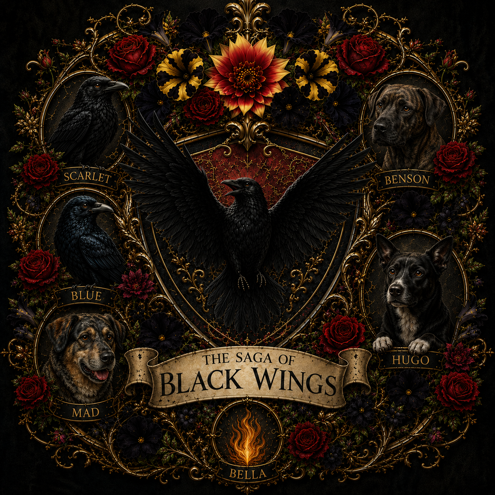
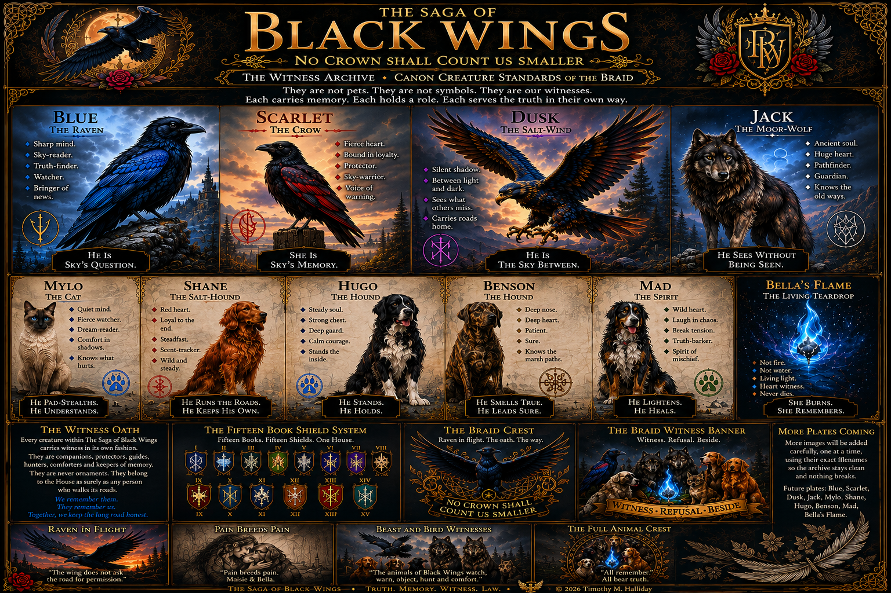
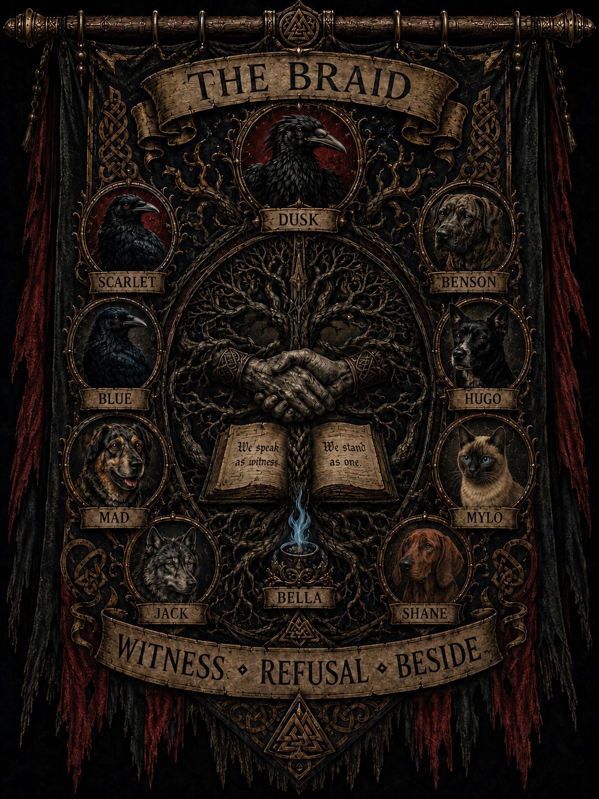
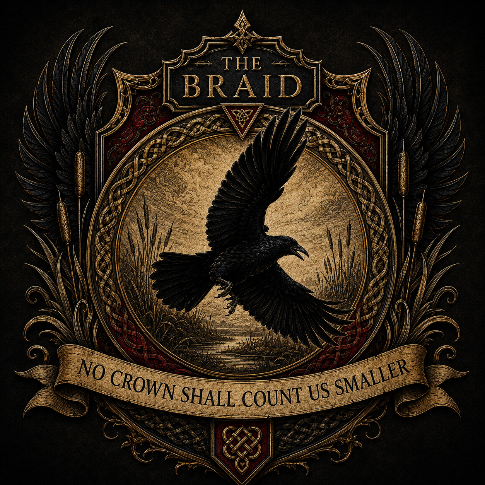
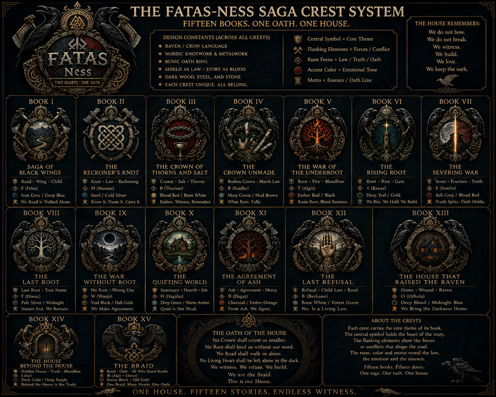
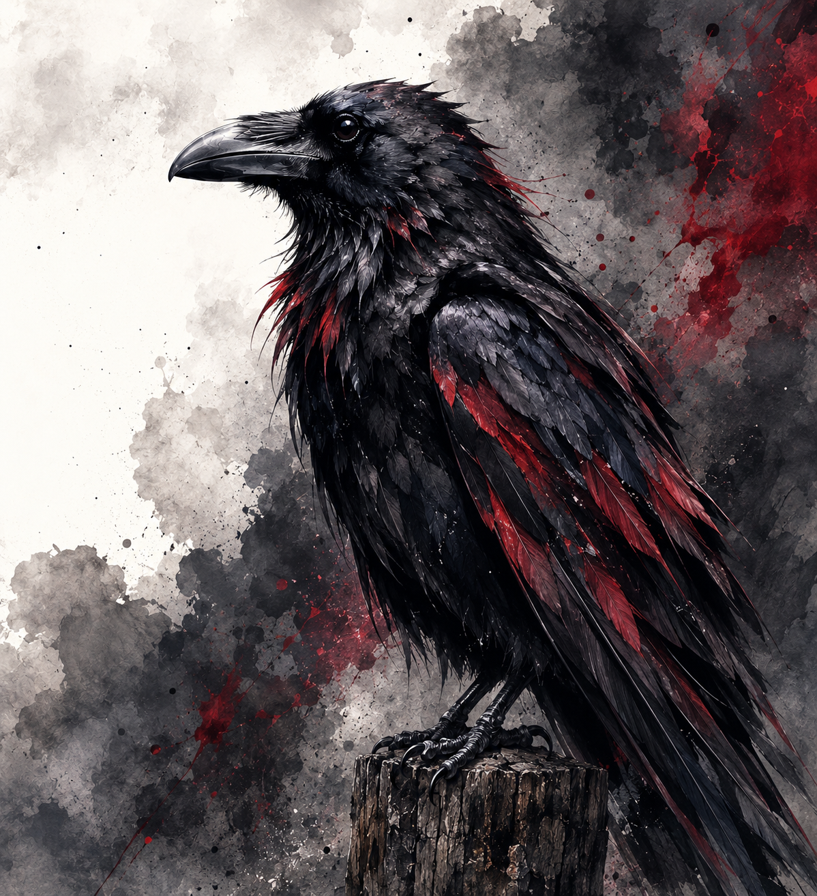
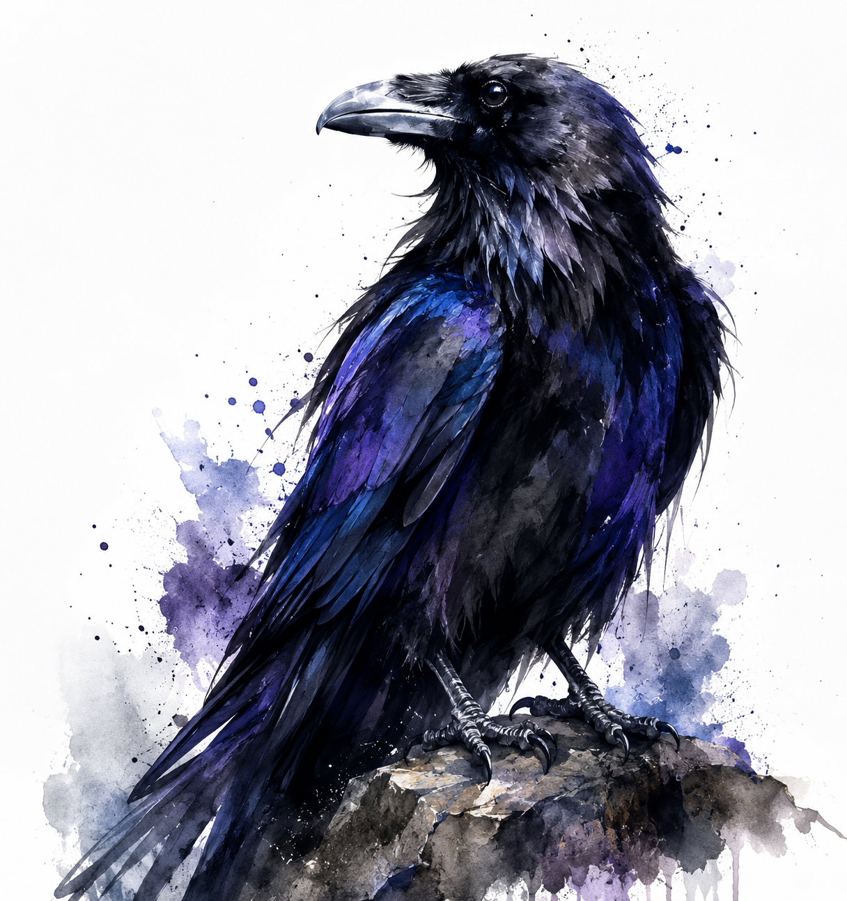
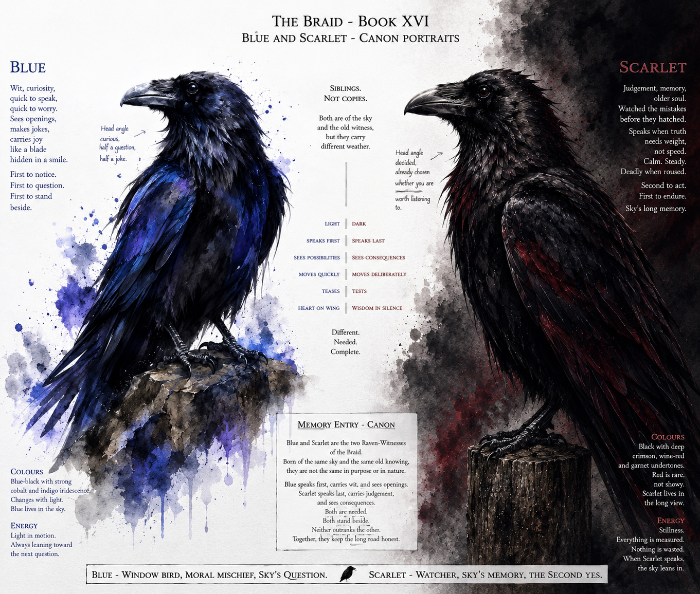
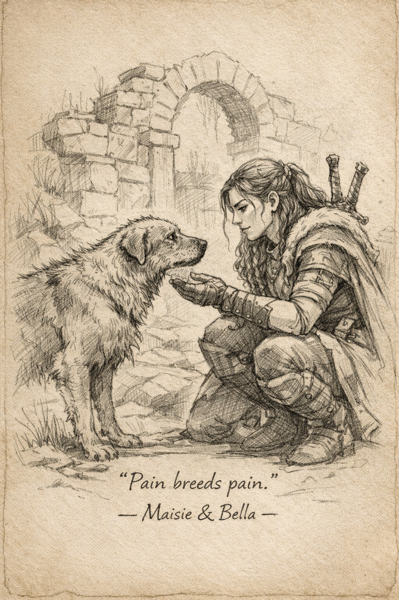
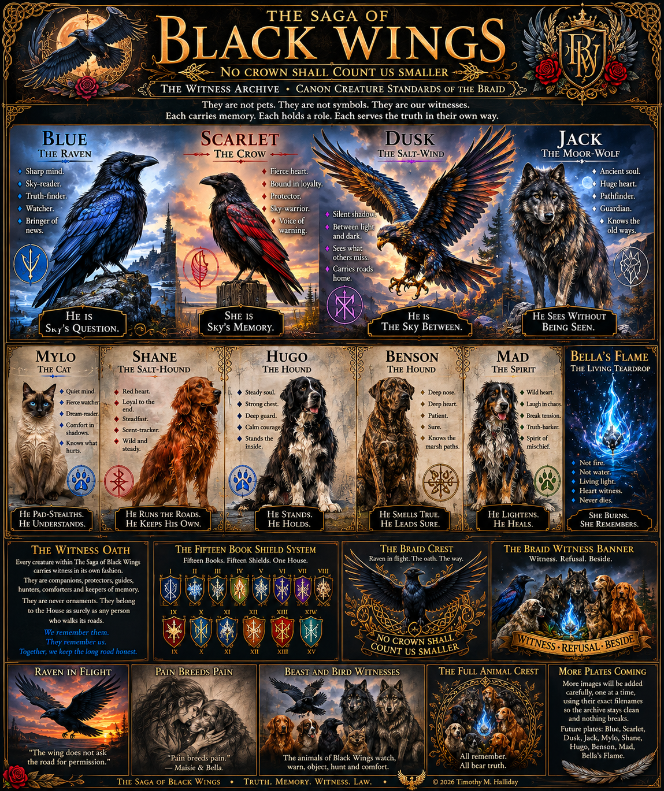

Beast and Bird Witnesses
A folklore-style plate presenting the wider animal company as witnesses rather than decoration.
Archive folklore plate
The Visual Witness Hall
Crests, shields, ravens, beasts, spirit flame, Witness-Marks, remembered plates and the painted language of Vardrum.
“A symbol is a door. A crest is a promise nailed where forgetting cannot reach.”

The Archive Opens
This hall gathers the visual language of The Saga of Black Wings: raven-shadow, old gold, dark flowers, beast-witnesses, family signs, shield systems, marsh lore, refusal, love, grief and the living symbols of the Braid.
Tap any artwork to open its full-size file. Return with the browser’s back arrow when you have finished looking.
Fur, Feather and Flame
The creatures of Black Wings are companions, protectors, guides, interrupters and keepers of memory. They are never ornaments standing outside the human story.

Tap the plate to inspect the full-size artwork.
A folklore-style plate presenting the wider animal company as witnesses rather than decoration.
Archive folklore plate

A hanging banner built around the oath: Witness, Refusal, Beside.
Braid banner
Oath, House and Book Road

Raven in flight, antique gold, black wings and the central oath: No Crown Shall Count Us Smaller.
Primary Braid crest

A vertical heraldic version suited to banners, book plates and narrow display spaces.
Archive crest variation

A heraldic road through the first fifteen books, carrying knot, crown, root, house, refusal and Braid imagery.
Books I to XV
Raven, hearth animals, dark flowers and spirit flame gathered around the living identity of Black Wings.
Living crest
The Wing-Pair and the Open Sky

Female crow witness: black, sturdy, calm and touched with restrained burgundy and garnet.
Crow portrait

Male raven witness: slimmer, inquisitive and carrying cobalt-blue iridescence across black feathers.
Raven portrait

Blue and Scarlet presented together as bonded animal witnesses, one inquisitive and one calmly judging.
Book XVI wing-pair plate

A stark black-winged study carrying the archive line: the wing does not ask the road for permission.
Flight study
Quiet Witness

A quiet pencil plate of Maisie and Bella, carrying tenderness, recognition and the warning that untreated hurt travels onward.
Maisie and Bella

A collected poster preserving animal, crest, shield, memory and archive concepts in one large visual document.
Early archive edition
Signs and Remembered Music

An in-world plate of fictional signs for witness, road, animal, spirit, place and remembered law.
Fictional mark system

The full Salt-Marsh harvest-song plate with lyrics, chords and keeper notes.
Song by Timothy M. Halliday
Behind the Wings
The Law of the Witness Hall
Written canon outranks an older picture label.
Animals are presented as witnesses, never ornaments.
Older concept plates remain clearly identified.
No broken placeholder is treated as finished artwork.
Every image receives a useful text description.
New plates are added carefully, one true file at a time.
“We remember them. They remember us. Together, we keep the long road honest.”
Leave the Witness Hall
Carry the crests, marks, birds and beasts into the Character Hall, Skald-Room or book road.